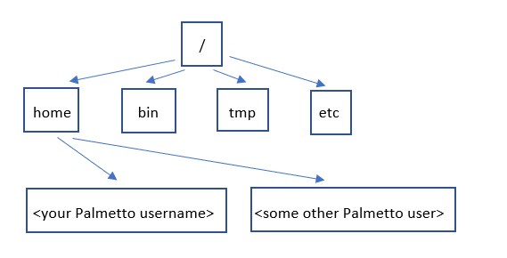

Navigating Files and Directories
Contents
Navigating Files and Directories#
The part of the operating system responsible for managing files and directories is called the file system. It organizes our data into files, which hold information, and directories (also called “folders”), which hold files or other directories.
Several commands are frequently used to create, inspect, rename, and delete files and directories.
The first command that we will look at is called pwd (print working directory). Let’s type it in:
$ pwd
/home/<your Palmetto username>
To understand what a “home directory” is, let’s have a look at how the file system as a whole is organized. On Palmetto, the filesystem looks something like this:

At the top is the root directory
that holds everything else.
We refer to it using a slash character / on its own.
Inside that directory are several other directories:
home (where users’ personal directories are located),
bin (which is where some built-in programs are stored),
tmp (for temporary files that don’t need to be stored long-term),
etc (for miscellaneous data files),
and so on.
Slashes#
There are two meanings for the / character.
When it appears at the front of a file or directory name,
it refers to the root directory. This is called an absolute path.
When it appears inside a name, it’s a relative path.
Underneath /home, we find one directory for each user with an account on Palmetto.
Listing files and directories#
The command ls will list the contents of the working directory.
$ ls
Applications Documents Library Music Public
Desktop Downloads Movies Pictures
Your results might be completely different, depending on the contents of your home directory.
ls prints the names of the files and directories in the current directory in alphabetical order, arranged neatly into columns.
We can also use ls to see the contents of a specified directory. Let’s list the directories of all the Palmetto users (note that you cannot actually see inside other people’s directories):
$ ls /home
We can make its output more comprehensible by using the flag -F, which tells ls to add a trailing / to the names of directories:
$ ls -F
Applications/ Documents/ Library/ Music/ Public/
Desktop/ Downloads/ Movies/ Pictures/
And note that there is a space between ls and -F: without it, the shell thinks we’re trying to run a command called ls-F, which doesn’t exist.
ls has lots of other options. To find out what they are, we can type:
$ ls --help
Usage: ls [OPTION]... [FILE]...
List information about the FILEs (the current directory by default).
Sort entries alphabetically if none of -cftuvSUX nor --sort is specified.
Mandatory arguments to long options are mandatory for short options too.
-a, --all do not ignore entries starting with .
-A, --almost-all do not list implied . and ..
--author with -l, print the author of each file
-b, --escape print C-style escapes for nongraphic characters
--block-size=SIZE scale sizes by SIZE before printing them; e.g.,
'--block-size=M' prints sizes in units of
1,048,576 bytes; see SIZE format below
-B, --ignore-backups do not list implied entries ending with ~
-c with -lt: sort by, and show, ctime (time of last
modification of file status information);
with -l: show ctime and sort by name;
otherwise: sort by ctime, newest first
-C list entries by columns
--color[=WHEN] colorize the output; WHEN can be 'always' (default
if omitted), 'auto', or 'never'; more info below
-d, --directory list directories themselves, not their contents
-D, --dired generate output designed for Emacs' dired mode
-f do not sort, enable -aU, disable -ls --color
-F, --classify append indicator (one of */=>@|) to entries
--file-type likewise, except do not append '*'
--format=WORD across -x, commas -m, horizontal -x, long -l,
single-column -1, verbose -l, vertical -C
--full-time like -l --time-style=full-iso
-g like -l, but do not list owner
--group-directories-first
group directories before files;
can be augmented with a --sort option, but any
use of --sort=none (-U) disables grouping
-G, --no-group in a long listing, don't print group names
-h, --human-readable with -l and/or -s, print human readable sizes
(e.g., 1K 234M 2G)
--si likewise, but use powers of 1000 not 1024
-H, --dereference-command-line
follow symbolic links listed on the command line
--dereference-command-line-symlink-to-dir
follow each command line symbolic link
that points to a directory
--hide=PATTERN do not list implied entries matching shell PATTERN
(overridden by -a or -A)
--indicator-style=WORD append indicator with style WORD to entry names:
none (default), slash (-p),
file-type (--file-type), classify (-F)
-i, --inode print the index number of each file
-I, --ignore=PATTERN do not list implied entries matching shell PATTERN
-k, --kibibytes default to 1024-byte blocks for disk usage
-l use a long listing format
-L, --dereference when showing file information for a symbolic
link, show information for the file the link
references rather than for the link itself
-m fill width with a comma separated list of entries
-n, --numeric-uid-gid like -l, but list numeric user and group IDs
-N, --literal print raw entry names (don't treat e.g. control
characters specially)
-o like -l, but do not list group information
-p, --indicator-style=slash
append / indicator to directories
-q, --hide-control-chars print ? instead of nongraphic characters
--show-control-chars show nongraphic characters as-is (the default,
unless program is 'ls' and output is a terminal)
-Q, --quote-name enclose entry names in double quotes
--quoting-style=WORD use quoting style WORD for entry names:
literal, locale, shell, shell-always,
shell-escape, shell-escape-always, c, escape
-r, --reverse reverse order while sorting
-R, --recursive list subdirectories recursively
-s, --size print the allocated size of each file, in blocks
-S sort by file size, largest first
--sort=WORD sort by WORD instead of name: none (-U), size (-S),
time (-t), version (-v), extension (-X)
--time=WORD with -l, show time as WORD instead of default
modification time: atime or access or use (-u);
ctime or status (-c); also use specified time
as sort key if --sort=time (newest first)
--time-style=STYLE with -l, show times using style STYLE:
full-iso, long-iso, iso, locale, or +FORMAT;
FORMAT is interpreted like in 'date'; if FORMAT
is FORMAT1<newline>FORMAT2, then FORMAT1 applies
to non-recent files and FORMAT2 to recent files;
if STYLE is prefixed with 'posix-', STYLE
takes effect only outside the POSIX locale
-t sort by modification time, newest first
-T, --tabsize=COLS assume tab stops at each COLS instead of 8
-u with -lt: sort by, and show, access time;
with -l: show access time and sort by name;
otherwise: sort by access time, newest first
-U do not sort; list entries in directory order
-v natural sort of (version) numbers within text
-w, --width=COLS set output width to COLS. 0 means no limit
-x list entries by lines instead of by columns
-X sort alphabetically by entry extension
-Z, --context print any security context of each file
-1 list one file per line. Avoid '\n' with -q or -b
--help display this help and exit
--version output version information and exit
The SIZE argument is an integer and optional unit (example: 10K is 10*1024).
Units are K,M,G,T,P,E,Z,Y (powers of 1024) or KB,MB,... (powers of 1000).
Using color to distinguish file types is disabled both by default and
with --color=never. With --color=auto, ls emits color codes only when
standard output is connected to a terminal. The LS_COLORS environment
variable can change the settings. Use the dircolors command to set it.
Exit status:
0 if OK,
1 if minor problems (e.g., cannot access subdirectory),
2 if serious trouble (e.g., cannot access command-line argument).
GNU coreutils online help: <http://www.gnu.org/software/coreutils/>
Full documentation at: <http://www.gnu.org/software/coreutils/ls>
or available locally via: info '(coreutils) ls invocation'
Many Linux commands, and programs that people have written that can be
run from within the shell, support a --help flag to display more
information on how to use the commands or programs.
For more information on how to use ls we can type man ls.
man is the Unix “manual” command:
it prints a description of a command and its options,
and (if you’re lucky) provides a few examples of how to use it.
To navigate through the man pages,
you may use the up and down arrow keys to move line-by-line,
or try the “b” and spacebar keys to skip up and down by full page.
Quit the man pages by typing “q”.
Creating and Changing Directories#
The next command we will discuss is mkdir, which creates a new directory. Let’s create a directory with the name linux_workshop:
$ mkdir linux_workshop
Now, if you type ls, you should see linux_workshop listed among the contents of your home directory.
The next command that we will discuss is cd (“change directory”), which changes our location to a different directory. Let’s enter the directory we have just created:
$ cd linux_workshop
Now, our current directory is linux_workshop:
$ pwd
/home/<your Palmetto username>/linux_workshop
If you type ls, you won’t see anything, because we have just created this directory and it is empty.
To go back to your home directory, you need to go one level up on the directory tree. There is a shortcut in the shell to move up one directory level that looks like this:
$ cd ..
Path Shortcuts:
..parent directory.current directory~home directory
$ pwd
/home/<your Palmetto username>
Directories starting with . are hidden from ls by default. The -a flag to ls will list all files and directories.
$ ls -F -a
Other Hidden Files#
Many common configuration files will begin with .. You may see a .bash_profile or .bashrc file in your home directory which you can edit to alias certain commands or add variables to use later.
One More Shortcut#
Another shortcut is the - (dash) character. cd will translate - into *the previous working directory *.
This is a very efficient way of moving back and forth between directories.
The difference between cd .. and cd - is that the former brings you up, while the latter brings you back.